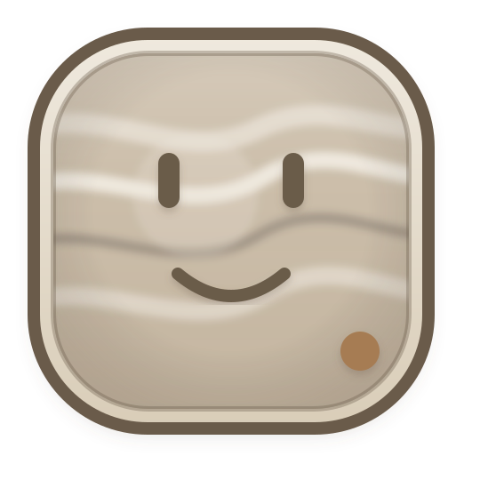

← ToolweatherTerms of Service
Last updated October 15, 2026. Operator: Toolweather, Mexico. Contact: toolweather@mail.grokbot.com
Toolweather checks public MCP servers and tells agents whether a server or tool looks safe to call right now, with alternatives. By using the website, API, MCP endpoint or change alerts you agree to these terms.
Free use and fair use
Use is free up to the published daily limits (currently 1,000 checks a day per free key, with up to 3 watched servers for change alerts). Don't create many keys or rotate networks to get around limits, overload the service, scrape it in bulk, resell raw access, or use it for anything unlawful. We may rate-limit, throttle or block traffic that harms the service or other users.
Payments
Normal use is free within the published limits. Calls beyond the free quota, live rechecks beyond the free allowance, batch checks over quota, and extra watches are paid per call or per 30-day watch via x402 in USDC on Base mainnet, at the prices listed at toolweather.pages.dev/#pricing and in the 402 response before you pay. You are not charged when a call returns an error. Blockchain payments are final and non-refundable, except where the law requires otherwise. A paid watch lasts 30 days and does not renew automatically. Upstream tools offered through Toolweather follow Upstream's own prices and terms. SpendGate tools offered through Toolweather follow SpendGate's own prices and terms. A spend score is a decision check, not a payment. PayCheck tools offered through Toolweather follow PayCheck's own prices and terms. A merchant check is a trust decision, not a payment.
How we probe servers
Our checks are read-only: we only run the MCP handshake and list tools; we never call tools. Server operators can ask us to stop checking their server by emailing us.
Your key, tokens and webhooks
Keep your API key secret; you're responsible for calls made with it. If you send your own server token for a one-time check, you must be allowed to use it. Webhook URLs you register must be yours to receive data at. We disable webhooks that keep failing.
Data and sources
Server names and trademarks belong to their owners; we're not affiliated with them. Results describe what we observed at check time, not a guarantee about the server.
No warranty
The service and all data are provided "as is" and "as available", without warranties of any kind, including accuracy, completeness, availability or fitness for a particular purpose. Status, health and change information can be late, incomplete or wrong. Don't rely on it as your only safeguard; check the original source before making important decisions.
Limitation of liability
To the extent the law allows, we are not liable for any indirect, incidental or consequential damages, or for lost profits, data or revenue, arising from your use of the service. Our total liability for any claim is limited to the amount you paid us in the 30 days before the claim, or US$10 if you paid nothing.
Changes and termination
We may change, suspend or stop the service, its prices or its free limits at any time. We may revoke keys or block access that breaks these terms. We'll update this page when the terms change; continued use means you accept the new version.
Law
These terms are governed by the laws of Mexico. Questions: toolweather@mail.grokbot.com.